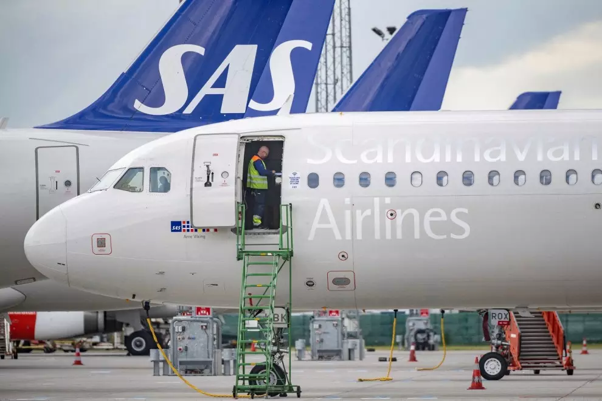

Inicio Economia Politica Sanidad
El paro registrado en las oficinas de los servicios públicos de empleo subió en 19.768 personas en septiembre en relación al mes anterior. La principal causa es el incremento del desempleo en el sector servicios por el fin de la temporada turística. Mientras, septiembre terminó con 2.722.468 personas en paro, marcando, aún así, su menor cifra en este mes desde el año 2008. El desempleo se redujo en septiembre en la construcción; en la agricultura; y en la industria. En cambio, subió en los servicios vinculados al turismo por el fin de la temporada turística, y en el colectivo sin empleo anterior. Sin embargo, la Seguridad Social ganó una media de 18.295 cotizantes gracias al aumento de la ocupación en más de 85.800 personas en el sector de la educación por el inicio del curso escolar. El paro registrado en las oficinas de los servicios públicos de empleo subió en 19.768 personas en septiembre en relación al mes anterior. La principal causa es el incremento del desempleo en el sector servicios por el fin de la temporada turística. Mientras, septiembre terminó con 2.722.468 personas en paro, marcando, aún así, su menor cifra en este mes desde el año 2008. El desempleo se redujo en septiembre en la construcción; en la agricultura; y en la industria. En cambio, subió en los servicios vinculados al turismo por el fin de la temporada turística, y en el colectivo sin empleo anterior. Sin embargo, la Seguridad Social ganó una media de 18.295 cotizantes gracias al aumento de la ocupación en más de 85.800 personas en el sector de la educación por el inicio del curso escolar. Oficina de Empleo El paro sube en agosto en 24.826 personas tras cinco meses de descensos Con este repunte en la afiliación, el sistema alcanzó los 20.724.706 ocupados, su nivel más elevado en un mes de septiembre dentro de la serie histórica, según datos publicados este martes por el Ministerio de Inclusión, Seguridad Social y Migraciones, que ha destacado que entre el 20 y el 29 de septiembre se superaron los 20,8 millones de afiliados en la serie diaria. Sin embargo, la subida de la afiliación registrada en septiembre de este año es la menor en este mes desde el ejercicio 2019. 